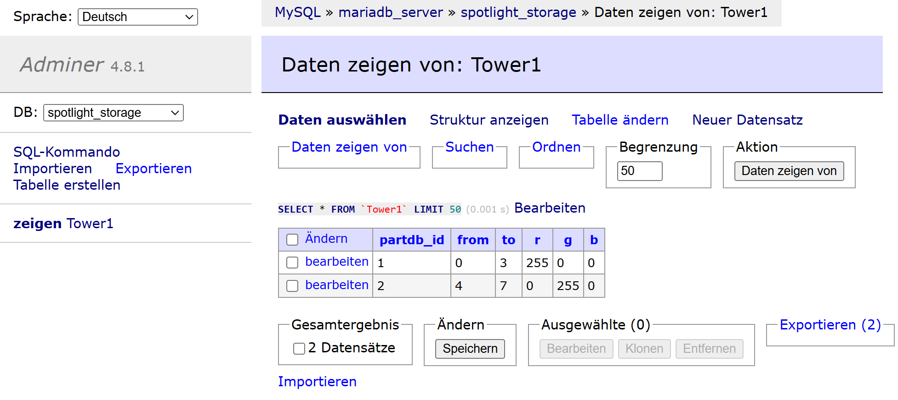
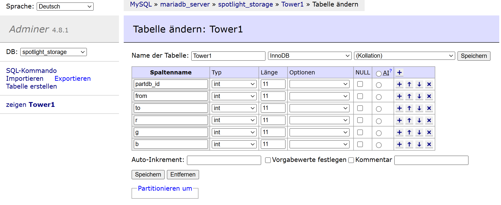
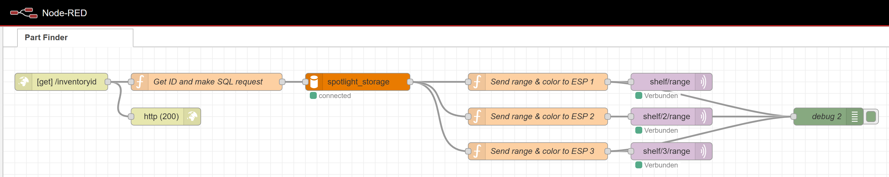

How is it set up¶
All needed code is in the Github Repo. It's manly for me, to have some documentation of how I have set all of it up.
Violentmonkey Browser Plugin¶
I use this plugin for google chrome. This uses code to get the Part-DB "ID" of the parts, and send's it to nodered.
MariaDB¶
Here I have one table per storage location that shows where a part is located with ws2812 led's. It contains:
| Variables | e.g. | Description |
|---|---|---|
partdb_id |
1 | ID of the part's |
from |
0 | At witch pixel to start the storage bin |
to |
5 | At witch pixel to stop the storage bin |
r |
255 | Color red of the pixel's |
g |
0 | Color green of the pixel's |
b |
0 | Color blue of the pixel's |


System Flow¶
graph LR
A[Part DB] <---> C{Browser
to GUI};
A[Part DB] -->|ID| B[Part Finder
Violentmonkey];
B -->|ID| D{NodeRed};
D <--> G[SQL Database];
G <--> O[ID / FROM / TO / R / G / B
1 / 0 / 5 / 255 / 0 / 0 ];
D ----->|ID=1/From=0/To=5/R=255/G=0/B=0| H[MQTT];
H ---> I[ESP 1
Storage 1];
I --> L[WS2812
Storage Bin's];
H ---> J[ESP 2
Storage 2];
J --> M[WS2812
Storage Bin's];
H ---> K[ESP ...
Storage ...];
K --> N[WS2812
Storage Bin's];NodeRed Flow¶
